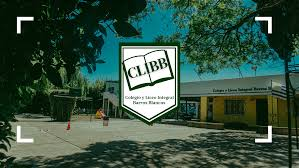

Primero empezando por el nombre y apellido de cada persona,Luka pedreira, Lorenzo Olivera, Aaron machado, Jano Medina, Nik Pissarouk, Paula Trujillo, Ambar Reyes, Exequiel Ricardo, Belen Ramos, Mia Curbelo, Facundo Ottonello.
Luka:Su deporte favorito es futbol, Lorenzo:Su deporte favorito es el pin-pong, Aaron:Su deporte favorito es el boxeo, Jano:Su juego favorito es el futbol, Nik: Su deporte favarito es el voleIbol, Paula:Su deporte favorito es el voleibol, Ambar:Su deporte actividad es el baile, Exequiel:Su deporte favorito es el futbol, Belen:Su deporte favorito es el voleibol, Mia:Su deporte favorito es tennis, Facundo:Su deporte favorito es el futbol y tambien el futbol americano.
El mundilibb se trata de hacer representaciones orales y artisticas, donde adolescentes de todos los años reprecentan a epocas o algo, en este año e tema principal fue la resiliencia, que se trata de superanse asi mismo de un trauma o algo que le a pasado a la persona, el tema secundario que nos toco hablar de Alan Turning, que fue un matematico y cientifico, que descubrio el codigo Nazi.
El momento mas especial en la clase durante el año es cuando se termina el horario y nos nvamos a casa.